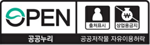

제2유형 · 출처표시 + 상업적 이용금지
출처 표시
이용 시 반드시
출처를 표기
출처를 표기
상업적 이용 금지
영리 목적의
이용 불가
이용 불가
변경 금지
문학 작품 예문 등
2차 변형 불가
2차 변형 불가
이용 조건
- 본 누리집의 저작물은 "공공저작물 자유이용 허락 표시 기준(공공누리, KOGL) 제2유형"이 적용됩니다.
- 저작물을 이용할 때에는 아래의 출처 표기 문안을 반드시 함께 표기해야 합니다.
출처 표기 문안
이 저작물은 국립국어원에서 공공누리 제2유형으로 개방한 「지역어 종합 정보 누리집」의 자료를 이용하였으며, 해당 저작물은 국립국어원 지역어 종합 정보 누리집(http://dialect.korean.go.kr)에서 무료로 내려받으실 수 있습니다.
제한 사항
- 이용자는 국립국어원이 이용자를 후원한다거나 국립국어원과 이용자가 특수한 관계에 있는 것처럼 제3자가 오인하게 하는 표시를 해서는 안 됩니다.
- 공공누리 제2유형이 적용되는 저작물의 경우 상업적 이용이 금지되어 있으므로 영리 행위와 직접 또는 간접으로 관련된 행위를 위하여 이용될 수 없습니다.
- '문학 속 지역어'에 포함된 문학 작품의 예문은 인용한 것으로, 변형 등 2차적 저작물의 작성이 불가합니다.
저작권 및 자료 이용에 관한 문의는 아래로 연락해 주시기 바랍니다.
국립국어원 · 서울시 강서구 금낭화로 154(방화동) · 대표전화 02-2669-9775
국립국어원 · 서울시 강서구 금낭화로 154(방화동) · 대표전화 02-2669-9775